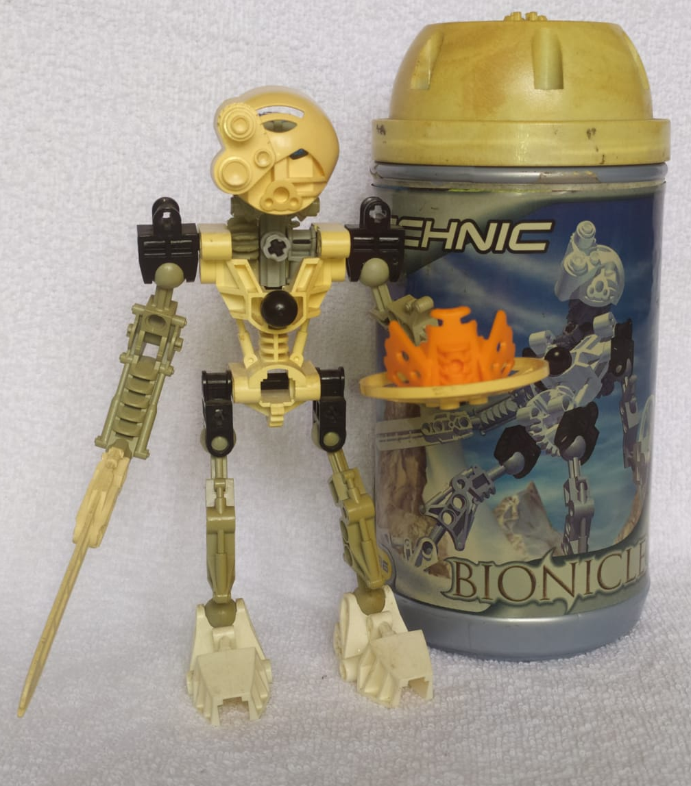

Pedro Ferreira
Product Manager, Future Software Developer
UFRJ, Bow Valley College
RPG and Gaming Ethusiast, Part-Time Writer and Master of Stupid Facts.
Hello there, I am Pedro Ferreira.
I am brazilian Business Major in Business Administration from Rio de Janeiro's Federal University (UFRJ), currently living in Brasil and studying Softwater Development at the Bow Valley College, on Calgary-AB, Canada.
Formaly working as a Project Manager for both the Telefonica Group and Verisoft, I decided expand my horizons and improve my knowledge by starting my studies on Software Development and, in the near future, plan to move to Canada.
I was born in 1989 and have lived most of my life in Rio de Janeiro. While most of the people around look at me as an extrovert with a lot to talk about, I consider myself more of a absurdly curious introvert with a hunger for learning. Life has taught me not to be shy about my wishes, look for opportunities at every crevice and to stand my ground at every inch.
Work Experiences:
- Project Manager @ Verisoft, 2018 - 2021
- Product Manager @ Telefonica, 2017 - 2018
- Data Analyst @ Telefonica, 2017
- Intern on Data Analysis @ Telefonica, 2016 - 2017
- Consulting Assistant @ Ayra Consultoria, 2015
Technical Experiences:
- Language: English @ Advanced Level
- Language: French @ Basic Level
- Language: Spanish @ Basic Level
- Microsoft Office Package @ Advanced Level
- Adobe Photoshop @ Basic Level
- Fire Brigade Training @ Telefonica
- First Aid Training @ RHMED
Personal Experiences:
- Volunteer @ Aldeias Infantis
- Boyscout @ Scout Group 76º Medianera
Reading Fantasy and Sci-Fi
Personally, I love reading and collecting fantasy and sci-fi books, with my personal favorites being The Lord of the Rings and Harry Potter franchises, along with authors Arthur C. Clarke and Isaac Asimov. If I had to pick a favorite book, it would be either Childhood's End by the first or Foudation by the latter. However, if I had to save one piece of writing (or suggest reading to everyone on the planet) it would be The Last Question, a short story by Asimov, which is by far the work of fiction that had the most impact in my life.
Collecting Lego Bionicle
|
While not a continuous hobby per se, I collected most of the Lego Bionicle series and consider it to be my most prized collection. I started collecting it in 2001 and only stopped when the series came to an end in 2010.
My collection started with the set 8536 - Kopaka, released in 2001 when I was 11, thus it's possible to see the wear and tear of the set on the image beside. The Bionicle Saga, compromised of the sets, comics, movies and books were a big part of my life and a great influence to me as a kid and teenager. Today, my collection spams more than 200 sets and is one of my major issues with moving to Canada, since I expect to one day be able to take all of them with me. |

Kopaka, 2001-Edition; along with the promotional Mask of Time. Photo by Me. |
RPG and Gamming
Another big part of my life is gamming and most specially table-top (now digital, online Table-Top) RPGs. Role-Playing Games such as Dungeons and Dragons and GURPS were part of my life since I was a kid and helped me develop both as an individual by improving my social skills and as a professional by improving several of my organization and time-management skills.
Not only RPG was a great tool for learning on itself, but it also prompted me to action on learning english so I could consume materials that weren't translated to my native language and developed my taste in reading.
Table-Top RPGs are usually played using dices with multiple number of sides. For example, a six sided dice is refered to a as d6. Since the Pandemic forced us to start playing online-only, we make use of dice rollers such as this one below to be able to play:
| d4 | Result: | |||
| d6 | Result: | |||
| d8 | Result: | |||
| d10 | Result: | |||
| d12 | Result: | |||
| d20 | Result: |
JavaScript Cheat Sheet
Here follow a simple cheat sheet with some snippets created from lectures and internet research, these codes reflect some of the information I find interesting to remember.
Activate a Function on Click
While not exactly javascript, it's important to remember that by adding the tag onClick="function()" to a HTML element will allow it to call the given function when clicked. This is especially useful for making interactive divs.
Getting values and information from HTML
Allows us to target a specific id value, style or other data from a document by replaxing x with the apropriate value.
variable = document.getElementById("id").value;
Allows us to give the sought value to a variable.
document.getElementById("id").value = variable;
Allows us to push the value of a variable into the element, for instance, a text box.
document.getElementById("id").innerHTML = variable;
Changes what is inside the tag to the variable.
Set Timeout
Allows us to set a timer in miliseconds so that a function will be called to run when the timer is done. Very useful for recursive functions.
function victoryCheck(){
setTimeout(function(){victoryCheck()}, 1000);
}
This function, after being called once will run itself every one second, allowing for a miriad of uses in terms of checking some information on a game or page.
String Methods
Here are some of the useful string methods to remember.
string.replace("x","y");
Changes whatever instance of "x" inside the string to a "y".
string.includes("something");
Returns true or false if a string includes "something" in it's composition.
string.startWith("something") and string.endWith("something");
Similar to the one above, returns true or false if the string either starts with or ends with "something", depending on the method.
Array Methods
Javascript allows for several array modification methods, making the life much easier.
array.pop() and array.shift();
Allows us to pop the last element or shift the first element from an array. Either actions pull the element out of the array, either into the void or into a variable.
array.push();
Allows us to insert a new element, whatever is inside the parenthesis, into the end of an array.
array.join(", ");
Joins all elements of an array into a string, adding whatever is inside the quotations as a separator. In this case, each element of the array will be joined in a string separated by ", ".
For Of
An easier and more intuitive of making iterations for arrays.
for (variable of array) {
do something...
}
Will perform whatever statements are inside the for loop, considering each value on the arrays.
Alerts and Prompts
Ways of communicating and getting input from the user without using a input element on HTML.
alert("Hello World");
Will pop up an alert box with the message "Hello World".
array.push(prompt("Enter a number:"));
Will pop up an box with the message "Enter a Number" and an input text for the user. In this example, it will get whatever input the user enters and push into the end of the array.
Parsing Values
This function makes sure a value stored in an array is returned as an int or a NaN.
variable = parseInt(array[i]);
Will push on the i index from the array into the variable as a int.
Creating Objects
How to create objects in Javascript.
let object = {
name: "Pedro",
lastname: "Ferreira",
Age: 20
}
With the object done, using each of the keys allows access to the information, for instance: object.name would return the string "Pedro". Objects can be arrays and can contain arrays or nested functions inside.
Fetching JSONs
The methods fetch() and json() allows us to seek a url for a json.
response = fetch(url);
data = response.json();
We use fetch and the response object to get the body text of the json, which in turn is changed into a proper JSON by parsing that body into a JSON.
Converting JSON into Javascript Objects
This method allows you to store information obtained from a JSON file into a javascript object.
sample = JSON.parse(json);
Will push values of json into the object sample.